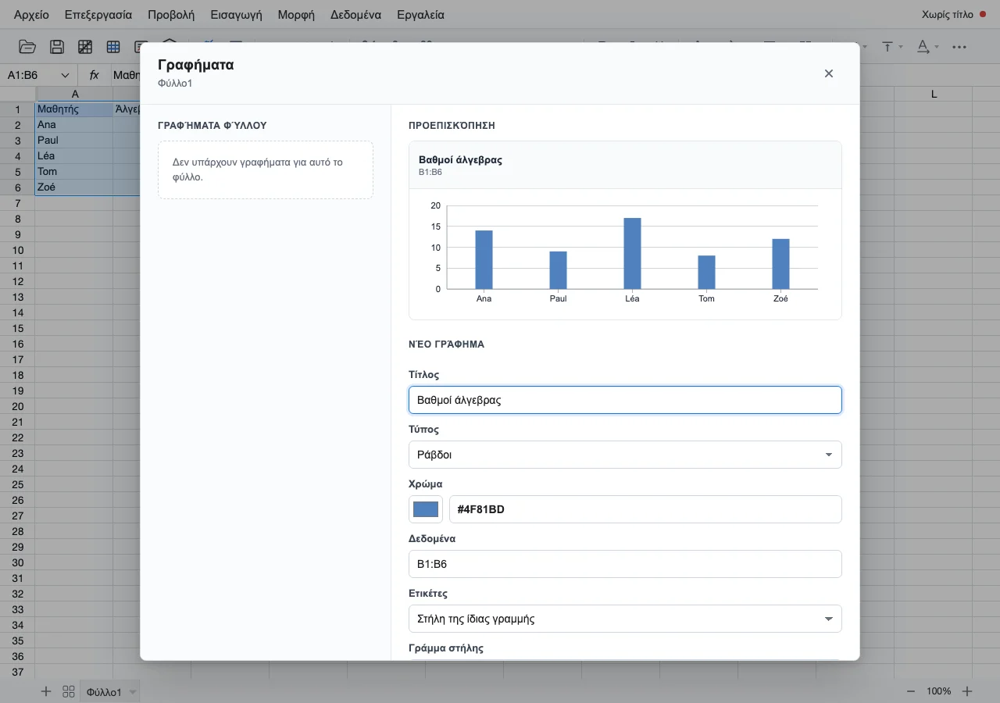
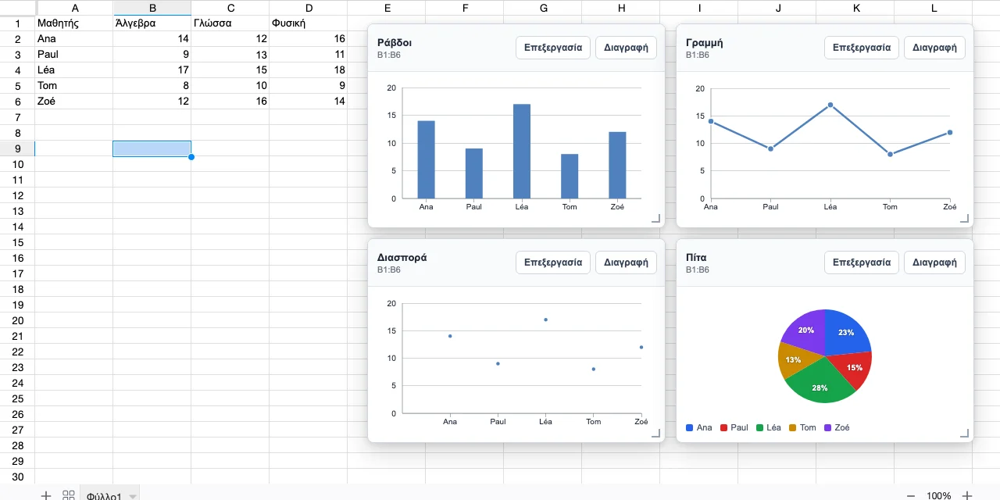
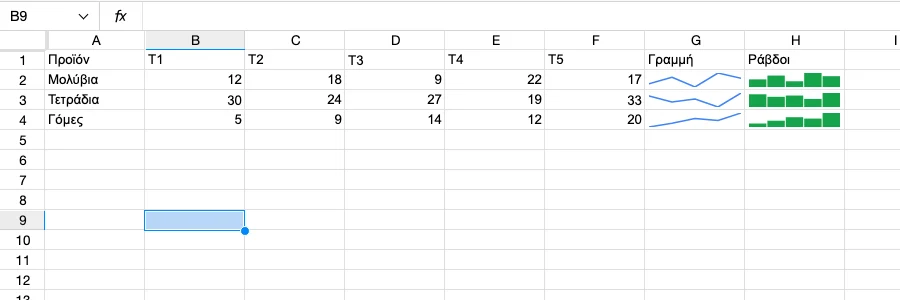

Γραφήματα και sparklines
Δημιουργία γραφήματος
- Επιλέξτε τα δεδομένα.
- ή Εισαγωγή › Εισαγωγή γραφήματος.
- Επιλέξτε τύπο και επιλογές· η προεπισκόπηση ακολουθεί.
- Προσθήκη, έπειτα Κλείσιμο.

| Επιλογή | Ερμηνεία |
|---|---|
| μια στήλη ή γραμμή αριθμών | τα δεδομένα |
| δύο στήλες | ετικέτες στην πρώτη, δεδομένα στη δεύτερη |
| δύο γραμμές | ετικέτες στην πρώτη, δεδομένα στη δεύτερη |
| δύο χωριστές στήλες, επιλεγμένες με Ctrl | το ίδιο |
Ένα γράφημα δείχνει μία σειρά: μια γραμμή ή στήλη δεδομένων. Κελιά χωρίς αριθμό, όπως μια κεφαλίδα, αγνοούνται.
Τύποι
| Τύπος | Για | Ετικέτες |
|---|---|---|
| Ράβδοι | σύγκριση | κάτω από τις ράβδους |
| Γραμμή | εξέλιξη | στον άξονα x |
| Διασπορά | σχέση δύο μεγεθών | είναι οι τετμημένες, αν είναι αριθμοί· αλλιώς 1, 2, 3… |
| Πίτα | μερίδια· θετικές τιμές | στο υπόμνημα ή στους τομείς |
Έως 120 τιμές, 24 για τομείς.

Επιλογές
| Πεδίο | Περιεχόμενο |
|---|---|
| Τίτλος | υποχρεωτικό· εμφανίζεται πάνω στο γράφημα |
| Χρώμα | επιλογέας ή κώδικας #4F81BD· οι τομείς έχουν δικά τους χρώματα |
| Δεδομένα | η περιοχή: B2:B6 |
| Ετικέτες | Χωρίς ετικέτες· Στήλη της ίδιας γραμμής (A)· Γραμμή των ίδιων στηλών (1)· Προσαρμοσμένη περιοχή, ίδιου μεγέθους με τα δεδομένα |
| Προβολή | τιμές, υπόμνημα, άξονας x, άξονας y, πλέγμα |
Μετακίνηση, τροποποίηση
- Σύρσιμο της ταινίας τίτλου μετακινεί το γράφημα· σύρσιμο της κάτω δεξιάς γωνίας αλλάζει το μέγεθος.
- Το Επεξεργασία ανοίγει ξανά το παράθυρο, το Διαγραφή το διαγράφει. Το παράθυρο απαριθμεί και όλα τα γραφήματα του φύλλου.
- Το γράφημα ακολουθεί τα δεδομένα των κελιών του.
Τα γραφήματα αποθηκεύονται στο αρχείο Excel ως πραγματικά γραφήματα και ξαναδιαβάζονται από το DocCells. Δεν εκτυπώνονται με το φύλλο.
Sparklines
Η συνάρτηση SPARKLINE σχεδιάζει μικρογραφία γραφήματος στο κελί.
=SPARKLINE(B2:F2)
=SPARKLINE(B2:F2; {"charttype"\"column"})
=SPARKLINE(B2:F2; {"charttype"\"line"; "color"\"#dc2626"; "linewidth"\2})
=SPARKLINE(B2:F2; {"charttype"\"bar"; "max"\100})
Οι επιλογές γράφονται σε άγκιστρα: το όνομα, μια ανάστροφη κάθετος, η τιμή· ένα ; ανάμεσα σε δύο επιλογές.
charttype | Σχέδιο | Δικές του επιλογές |
|---|---|---|
"line" (προεπιλογή) | γραμμή | color, linewidth, xmin, xmax, ymin, ymax |
"bar" | στοιβαγμένες ράβδοι | max, color1, color2 |
"column" | στήλες | color, negcolor, lowcolor, highcolor, firstcolor, lastcolor, axis, axiscolor, ymin, ymax |
"winloss" | κέρδη και ζημίες | οι ίδιες, χωρίς ymin και ymax |
Κοινές επιλογές: empty ("zero" ή "ignore"), nan ("convert" ή "ignore"), rtl (από δεξιά προς αριστερά). Η τεκμηρίωση της SPARKLINE δίνει όλες τις τιμές, με παραδείγματα.
Για μεγαλύτερο σχέδιο, μεγαλώστε τη γραμμή και τη στήλη, ή συγχωνεύστε κελιά.